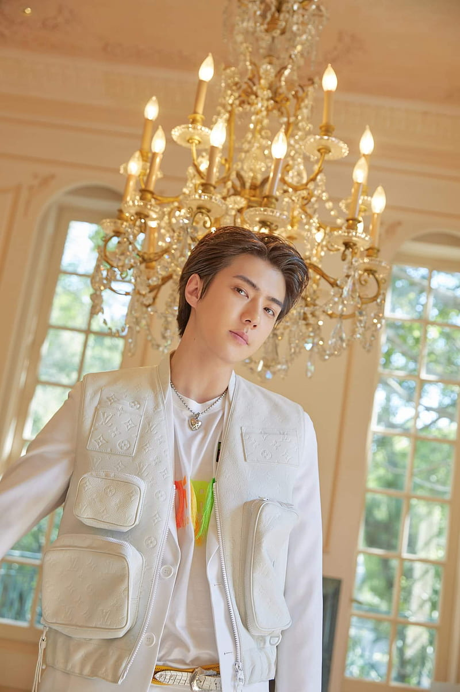

| Description | EXO's Songs | Comment |
|  | English Name | Oh Sehun |
|---|---|---|
| Nationality | South Korean | |
| Korean Name | 오세훈 | |
| Born | April 12, 1994 | |
| Associated Acts | EXO, EXO-K, SMTOWN | |
| Occupation | Singer, Actor, Dancer, Model, Rapper, Visual | |
| Year active | 2011-present | |
| Height | 183 cm | |
| weight | 66 kg (146 lbs) | |
| Relationship Status | Single |
Sehun was born in Jungnang-gu, Seoul, South Korea, on April 12, 1994. He graduated from the School of Performing Arts Seoul in February 2013. He has an older brother.Sehun, who was only 12 years old, was discovered while out and about. He attended four auditions over the course of two years before joining SM Entertainment in 2008.The fifth member of EXO to be announced in 2012 is the man from Seoul. He debuted with the group in April 2012 with the release of the EP Mama.Their introduction went over well. At its peak, Mama was ranked one on the Gaon Album Chart and eighth on the Billboard World Albums Chart.
Sehun is a member of the EXO-SC sub-unit in addition to being active with EXO. They released the EP What A Life in 2019 with teammate Chanyeol.In 2020, the duo followed it up by releasing their debut studio album, 1 Billion Views.He has also appeared in a number of movies and online series. Included in this are Now, We Are Breaking Up (2021), Dokgo Rewind (2018), and Secret Queen Makers (2018).
He also appeared in the Netflix variety program Busted!, which ran from 2018 to 2021.
Sehun was first scouted by an SM Entertainment casting agent at 12 years old while he was out having lunch with friends, he was eventually cast into SM Entertainment in 2008. He went through four auditions in two years. On January 10, 2012, Sehun became the fifth Exo member to be officially introduced to the public. The group made their debut with the extended play Mama in April 2012.
In February 2016, Sehun received a Weibo Star Award as voted by users of the Chinese social networking site Sina Weibo at the 5th Gaon Chart K-Pop Awards. In March 2016, Sehun was cast as the male lead in the upcoming Korean-Chinese film Catman, which was released in 2018. In July 2016, Sehun was announced to be starring as the male lead in the upcoming Korean-Chinese web drama Dear Archimedes, which began airing in 2019.
In September 2017, Sehun became a fixed cast member in a new Netflix original variety show Busted.
In February 2018, Sehun was cast in the action web drama Dokgo Rewind as the male lead. In May 2018, it was announced that Sehun will be starring in the web drama Secret Queen Makers which is produced by Lotte Duty Free. On September 14, 2018, Sehun with fellow Exo member Chanyeol released a collaborative single, "We Young", for SM Station X 0.On June 28, 2019, it was confirmed that Sehun and Chanyeol were preparing to debut as the group's second sub-unit Exo-SC. They released their first EP, What a Life, on July 22, 2019.
On May 24, 2020, Sehun became the new brand spokesperson of Dr. Jart+ in China. After becoming the brand's spokesperson, Dr. Jart+ achieved the highest sales ever during China's mid-year shopping festival and Sehun's limited mask set sold 20 thousand pieces in nine minutes.In 2021, Sehun starred in the fantasy movie Catman which was released and became one of the first works released in China that has a South Korean star involved after the Korean Wave restriction in China. Later the same year, he played a supporting role in the SBS drama Now, We Are Breaking Up.In 2022, sehun made his cinema debut in the movie The Pirates: The Last Royal Treasure. In March 2022, it was announced that Sehun would be playing the main role, Go Yoo, in the upcoming TVING original drama All That We Loved. The first and second episode released on May 5, 2023.
In 2017 and 2018, sehun attended Louis Vuitton's fashion shows in Paris. He was announced as the Best Dressed Man in Louis Vuitton's show consecutively for both years.In January 2017, Vogue Korea released a pictorial with sehun wearing products from the Moncler Gamme Bleu 2017 Collection. In December, sehun attended Moncler's Hong Kong flagship opening party.In 2018, sehun became the second South Korean male idol after G-Dragon to be featured on the cover of Vogue Korea for its 22nd anniversary. It became the best-selling issue since the magazine's inception in 1996. sehun became the ambassador for the Italian luxury fashion house Zegna's clothing line XXX alongside Chinese singer and actor William Chan.
In January 2020, sehun attended Berluti's fashion show in Paris. He then modeled for the brand's 2020 Spring/Summer Menswear Collection, and the pictorial and fashion films were released through W Korea's March issue.In September, sehun was announced as one of the three protagonists in Cartier's digital project, Pasha De Cartier. sehun was announced as the new face of Dior Men in October 2020. sehun was the first Man of Dior Global Ambassador in December 2021.